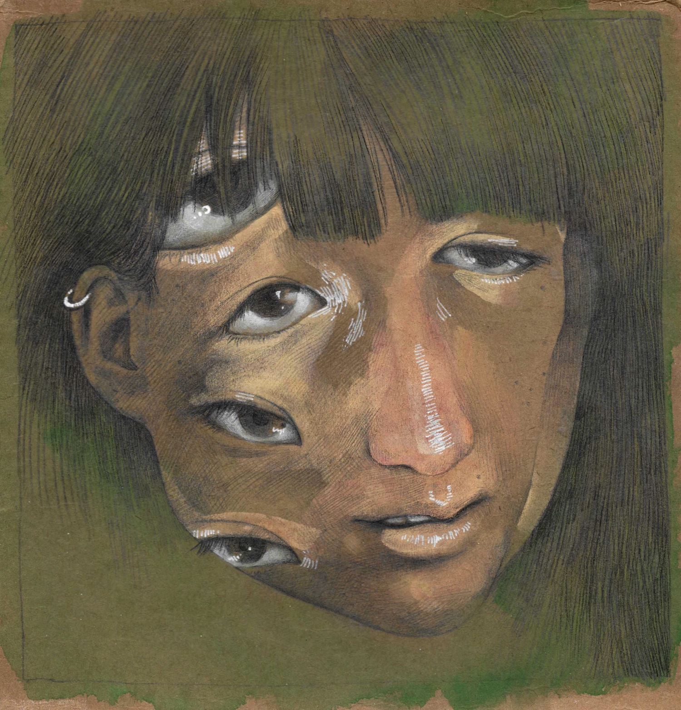

Miranda Li
I'm a student at Stanford studying computer science. I spend most of my time thinking about art, journalism, education, accessibility and (sometimes/frequently) their intersections with technology & computation.
My email is mirandal at stanford dot edu; my resume is here; my Linkedin is here.
Recently I've...
- authored accessible assignments for 12,000+ students and curriculum for teaching 900+ volunteer teachers as part of the Code in Place head TA team
- currently working on a mass storytelling project related to Code in Place / am actively involved in planning the next iteration of Code in Place
- produced AI-generated poetry for an upcoming exhibition by Rashaad Newsome
- helped with the upcoming redesign of Artbreeder
- built a voice conversion pipeline for anonymization / protection of subjects in documentary films with Teus Media
- generated fake newspaper scans and made a real zine for a project called Nonsense Newspapers
Art
- Green sketchbook (March 2020 - December 2020)
- I've finished a second sketchbook since and am now on my third :)
- Google Drive folder with some other things I've made
- Gouache painting process
- 
- Magdalene pencil drawing / animation process
- When I was Graphics Managing Editor for The Stanford Daily (November 2018 - June 2019) I helped make